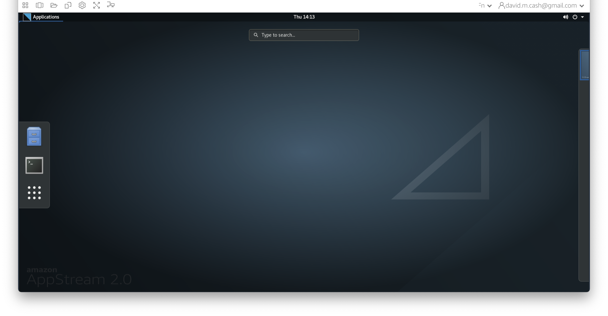
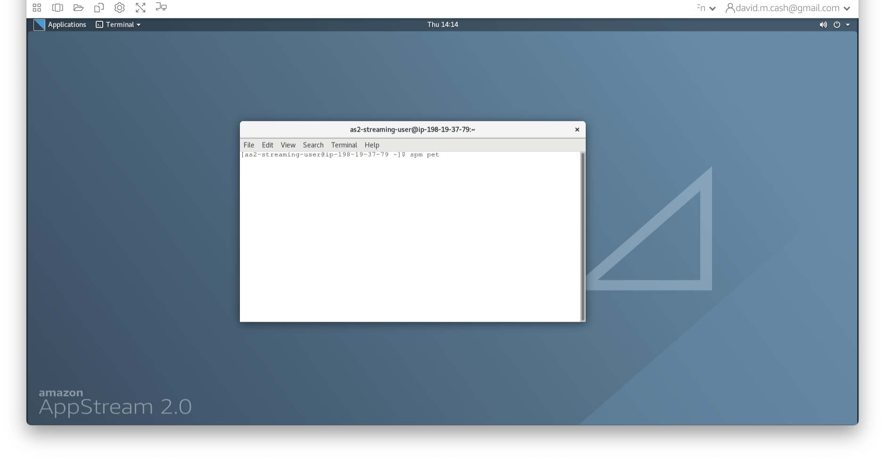

Extra: Using the Command Line
Last updated on 2024-07-30 | Edit this page
Estimated time: 12 minutes
Overview
Questions
- What is the command line interface?
- Why is it helpful in neuroimaging analysis?
- What are some common commands that I need to know?
Objectives
- Discover how to interact with files and directories on the command line
- Identify benefits that the command line can provide in processing image data.
Introduction: Why use the command line?
In order to get started with neuroimaging analysis, it is really helpful to first understand how to interact with a computer on the command line called the shell. At first look, it’s pretty bare bones and minimalist. How can this simple way of interacting with a computer be so useful?
Nowadays, we usually interact with a computer using a Graphical User Interface or a GUI. These include programs like Word, Chrome, iTunes which allow you to interact using your mouse to press buttons, select options, move sliders, change values, etc. It provides a simple, intuitive way for us to access the essential functionality that we need from these programs. Some neuroimaging analysis software does comes with a GUI, like this one from the Statistical Parametric Mapping (SPM) toolbox, a popular MATLAB based package.
Benefits of the command line
While GUIs are often the best way to interact with your computer, using the command line for neuroimaging analysis is tremendously powerful for many reasons:
- Automation GUIs typically will wait until you tell them what to do. When you go home at night, it won’t do anything because it has no instructions! You can setup the command line to automate some tasks so that it works late in the night while you are sleeping.
- Scalability Working with a GUI often means a lot of mouse moves and clicks. For a small handful of imaging sessions, this is a fine way to work, but what if your research project has hundreds of datasets to process. It’s far more likely that an error could occur or a dataset is missed. While you go through the lessons in this workshop, count the number of mouse clicks it takes you to do a task and think about how that would scale to your project. When you run on the command line it has all of the information it needs, so no interaction is needed, saving a lot of your time.
- Control With GUIs, you have access to the functionality that the GUI provides you. However, hidden from the GUI may be more advanced options that you need for your research. For the sake of more software that is often more user-friendly for the majority of tasks you are looking to do, the GUI can sometimes be restritie. With the command line, you should have access to more, if not all, of the functionality that the software provides, and thus more control over how the task is run. It may take some investigation on your part, though.
- Interoperability You may find that you want to take results from one program and feed them into another and then another. With GUI’s this often means saving or exporting the results, then opening up the other program and importing them. The command line often allows you the means to piece these steps together in one set of instructions.
Getting started
In this section, we are going to go through some basic steps of
working with the command line. Make sure you are able to connect to your
working environment by following the directions in the Setup section of this website. As a reminder, you
should have a desktop on your virtual machine that looks something like
this:  Click on the
Click on the
Applications icon in the top left of the window, and you
should see a taskbar pop out on the left-hand side. One of the icons is
a black box with a white border. This icon will launch the
Terminal and give you access to the command line. 
Navigating the file structure
The terminal should produce a window with a white background and black text. This is the shell. We will enter some commands and see what responses that the computer provdes. 
-
The first thing we are going to do is figure out our present location in the file system of the computer. We do that using the command
pwdwhich stands for present working directory. Type it in the command line and see what the response is:OUTPUT
/home/as2-streaming-userThis directory is also known as your home directory
-
Next we are going to see what items are contained in this directory. To do that, simply type
lsand it should show you all the files.OUTPUT
Background.png data MyFiles testYou will notice that some of the entries are different colors. The colors indicate whether the entries are files or directories. They also can indicate if these files or directories have special properties.
-
If we want more information about these files and directories, then we can use the same command with a command line option
-lto tell the computer to list the files in a long formatOUTPUT
total 60 -rw-r--r-- 1 as2-streaming-user as2-streaming-user 57734 Jun 28 2023 Background.png drwxrwxrwx 8 as2-streaming-user as2-streaming-user 142 Jun 22 2023 data drwxr-xr-x 2 as2-streaming-user as2-streaming-user 46 Jul 8 22:31 MyFiles drwxr-xr-x 2 as2-streaming-user as2-streaming-user 6 Jun 16 2023 testThis now gives a lot more information, with the letters before the file telling us about who owns the file (3rd and 4th column), what permissions they have to read, write or run (execute) the file (first column),and when it was modified (6th column).
If you want to list the contents of a different directory, just put it after the
ls -lOUTPUT
total 8 drwxr-xr-x 6 as2-streaming-user as2-streaming-user 84 Jun 16 2023 DiffusionMRI drwxr-xr-x 2 as2-streaming-user as2-streaming-user 4096 Jul 4 2023 ExtraStructuralMRI drwxr-xr-x 3 as2-streaming-user as2-streaming-user 26 Jun 27 2023 FunctionalMRI drwxr-xr-x 2 as2-streaming-user as2-streaming-user 4096 Jun 16 2023 ImageDataVisualization drwxr-xr-x 5 as2-streaming-user as2-streaming-user 77 Jul 7 2023 PETImaging drwxr-xr-x 2 as2-streaming-user as2-streaming-user 120 Jun 27 2023 StructuralMRI -
The
datadirectory is a sub-directory within your home directory where you will be storing your work. So let us move into that directory using thecdor change directory command:cd dataNow type the command
pwdagain. Has the result changed?What happens when we list the contents of this directory?
You should get the same result as when you ran
ls -l datafrom your home directory. -
Inside the data directory, let’s create a new directory that we will call
mywork. We do that using a command calledmkdir,
Absolute versus Relative Paths
Locations in the file system, whether they are files or directories,
are known as paths. Paths can be referred to in absolute terms
(like a postal address or latitude and longitude) or relative
terms (like directions to your work from home). In some cases it is more
convenient to use absolute paths, and in others, relative paths are
nicer. Absolute paths always begin with a / character. From
your home directory, the following two commands do the exact same
thing.
OUTPUT
DiffusionMRI FunctionalMRI mywork StructuralMRI
ExtraStructuralMRI ImageDataVisualization PETImagingBASH
# Using a relative path - this will only work if you are in the
# directory where data is located
ls dataOUTPUT
DiffusionMRI FunctionalMRI mywork StructuralMRI
ExtraStructuralMRI ImageDataVisualization PETImagingHelpful hints
-
Feeling lost? You can always get back to your home directory simply by typing
cdwithout any arguments or by using the tilde symbol, which is the shortcut for home. -
Help me! If you want to know more about a command, just type
manin front of it to get the manual entry. Previous commands If you want to see a list of commands that you have run, you can type in the
historycommand. You can also scroll through previous commands by tapping the up and down arrow keys and then hit Return when you found the command you want to run again.
Processing files
In this section, we will go over how to copy and view the contents of the files. There is some helpful information about one of the images in our Structural MRI lesson that we want to look at in more detail.
-
Let’s copy it over from the directory it is currently located into our new
myworkdirectory. We do this using thecpor copy command. We first specify the source, or the file/directory that we want to copy (data/StructuralMRI/sub-OAS30003_T1w.json), and then we specify the destination path where we want to make the copy (data/mywork). Before we do this command, let’s make sure we are back in the home directory first -
Now let us confirm that the copy of the file is where we expect it to be:
OUTPUT
sub-OAS30003_T1w.json -
Finally, let’s look at the contents of the file. We can do that with the command
catwhich concatenates and prints files.
Using cat on a large text file can end up looking
impressive as text swarms all over your terminal, but it can be hard to
examine the file…
OUTPUT
{
"Modality": "MR",
"MagneticFieldStrength": 3,
"Manufacturer": "Siemens",
"ManufacturersModelName": "Biograph_mMR",
"DeviceSerialNumber": "51010",
"PatientPosition": "HFS",
"SoftwareVersions": "syngo_MR_B18P",
"MRAcquisitionType": "3D",
"SeriesDescription": "MPRAGE_GRAPPA2",
"ScanningSequence": "GR_IR",
"SequenceVariant": "SP_MP",
"ScanOptions": "IR",
"SequenceName": "_tfl3d1_ns",
"ImageType": [
"ORIGINAL",
"PRIMARY",
"M",
"ND",
"NORM"
],
"AcquisitionTime": "11:53:18.945000",
"AcquisitionNumber": 1,
"SliceThickness": 1.2,
"SAR": 0.0397884,
"EchoTime": 0.00295,
"RepetitionTime": 2.3,
"InversionTime": 0.9,
"FlipAngle": 9,
"PartialFourier": 1,
"BaseResolution": 256,
"ShimSetting": [
-6853,
14225,
-5859,
-89,
-201,
157,
585,
-236
],
"TxRefAmp": 307.072,
"PhaseResolution": 1,
"ReceiveCoilName": "HeadNeck_MRPET",
"PulseSequenceDetails": "%SiemensSeq%_tfl",
"PercentPhaseFOV": 93.75,
"PhaseEncodingSteps": 239,
"AcquisitionMatrixPE": 240,
"ReconMatrixPE": 256,
"ParallelReductionFactorInPlane": 2,
"PixelBandwidth": 238,
"DwellTime": 8.2e-06,
"ImageOrientationPatientDICOM": [
0,
1,
0,
0,
0,
-1
],
"InPlanePhaseEncodingDirectionDICOM": "ROW",
"ConversionSoftware": "dcm2niix",
"ConversionSoftwareVersion": "v1.0.20171017 GCC4.4.7"If we want to have a bit more control over how we view larger files,
then we can use either the more or less
command. This allows you to scroll through the file a line or page at a
time, go back, search the text, etc.
-
We no longer need that file anymore (remember it is just a copy), so we can remove files by using the
rmcommand, but BE CAREFUL and check the command twice before executing the command, as this cannot be undone! Watch out for any spaces or any special characters like the*and?as they mean something special in the shell, and including them in a remove command may remove more files than you intended.
Further reading
If you want to find out more how to use the command line, please check out the following helpful resources:
Stretch exercises
As you get more comfortable, you can start to do powerful things with the command line.
Variables
Sometimes we want to store some information for future use. We can do
that with a variable. A variable has a name and a value. A variable in
the shell can hold a number, a single character, a word, sentence or a
list of things. You assign a value to a variable with a simple
statement var=value where you replace var with the name
that you want to call the variable and replace value with the value you
want to store. Once the variable has been assigned, you can access the
value within the variable by putting a $ in front of the
variable name
OUTPUT
My favorite images are T1 scans.See how it replaces $image with T1. Let’s do it again
and assign a new value to image.
OUTPUT
My favorite images are DTI scans.Looping
Variables are really helpful when we want to set up a loop. Let’s say we have images from 100 different subjects who are in our study, and we want to make sure that we process each of the images in the exact same way. You could type the commands out 100 times, where in each set of commands, you change the name of the image files. As you could imagine, that would be really boring, and there is definitely more risk of an error being introduced. A loop is a solution to this and makes your command writing much simpler. It is simply an instruction to the shell that says run the same command a bunch of times.
OUTPUT
Hey David, I need help!
Hey Ludovica, I need help!
Hey Tobey, I need help!
Hey Alexa, I need help!
Hey Luigi, I need help!Here, the loop is setup with a for command, with the
format for (var) in (list) where (var) is the variable
name, and its value will change with each iteration of the loop and
(list) holds the list of entries that you want to loop over. The for
loop will determine how many entries are in the list. At each iteration,
it will place the next value of the list in to the variable (in our
example name) and execute the commands that are inside the
keywords do (start the loop) and done (end the
loop).
Redirection
Quite often, when you execute a command on the shell, it prints out
information on the screen that is useful to store for later. You can
store them in the file using redirection. The >
says redirects the output from the screen to another location, such as a
file, overwriting the current contents. The >> does
the same thing but it just appends the contents at the end. This loop
just prints the number and its square on the screen.
OUTPUT
1 1
2 4
3 9
4 16
5 25
6 36
7 49
8 64
9 81
10 100This loop does the same thing but saves it to a text file called
squares.txt
Now if we show the contents of squares.txt, we see it
has the same information.
OUTPUT
1 1
2 4
3 9
4 16
5 25
6 36
7 49
8 64
9 81
10 100Redirection can also be used for getting input using the
< character. This finds the line where 64 is the
answer.
OUTPUT
8 64Finally you can redirect output from one command into input of
another command using the pipe character, |. In this case
we are directing the output from the echo command from the
screen to the input of the calculator command bc.
OUTPUT
58564Command line cheatsheet
| Command | Name | Function | Example Usage |
|---|---|---|---|
| man | Manual | HELP! | man cd |
| pwd | Print working directory | Where am I? | pwd |
| mkdir | Make directory | Create a new directory | mkdir dir1 |
| cd | Change directory | Go to the following location | cd dir1 |
| ls | List | Shows what is inside a directory | ls dir1 |
| cp | Copy | Copies a source file to a new destination | cp src dest |
| mv | Move | Moves a source file to a new destination | mv source destination |
| rm | Remove | Deletes a file or a directory | rm dir1/bad_file |
| cat | Concatenate | Prints out the contents of a file | cat results.txt |
| more | more | Prints out the contents of a file. Better for large files to scroll | more results.txt |
| nano, emacs, gedit | Text editor | Programs that edit plain text files (no formatting) |
emacs dir1/inputs.txt
nano dir1/inputs.txt
|
Key Points
- The command line interface is a low-level way of interacting with your computer
- It provides more control, more reliability, and more scalability than manually interacting with a graphical user interface.
- Paths can be specified in two ways: an absolute path and a relative path. The absolute path remains the same regardless of the current location, where the relative path will change.
- Help can be found by typing the man command